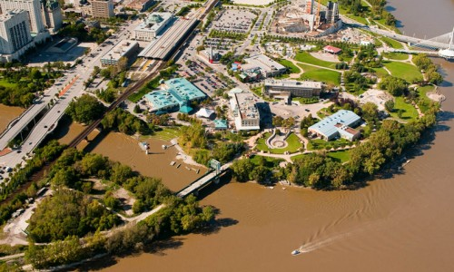
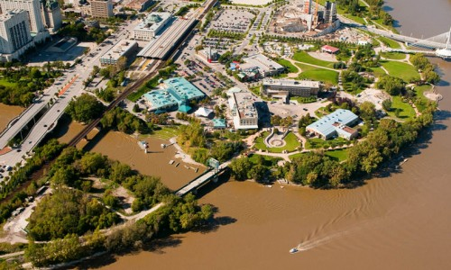
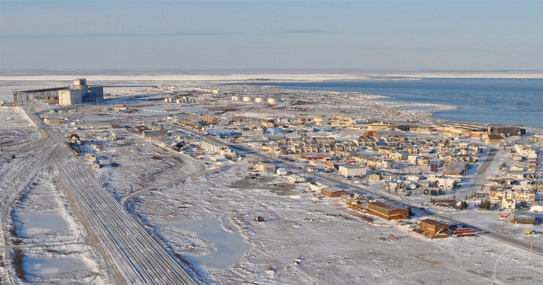

The largest and capital city of Manitoba is Winnipeg,Manitoba. Winnipeg is the city that has the largest population in Manitoba and is the 8th largest metropolitan area in Canada. Winnipeg is located in the eastern portion of the Canadian praries in West Canada and therefore is a city named as the "gateway to the west". Winnipeg's current mayor is Brian Bowman. Winnipeg's tourist attractions include the Canadian Museum for Human Rights, The Forks, and Fort Garry.
 


The professional sports teams in Manitoba include the Winnipeg Jets of the National Hockey League (NHL) and the Winnipeg Blue Bombers of the Canadian Football League (CFL).

Here are some of the symbols that help make Manitoba a very unique and special place:
| Name | Symbols |
|---|---|
| Mammal | Plains Bison |
| Bird | Great Grey Owl |
| Fish | Walleye |
| Tree | White Spruce |
| Flower | Crocus |
| Grass | Big Bluestem | Motto | Gloriosus et liber (Glorious and free) |

1. Winnipeg, Manitoba has both the highest temparature recorded in Canada (42 degrees celsius) and the lowest temparature recoded in Canada (-47 degrees celsius).
2. Manitoba drinks the most 7-Eleven Slurpees in the world.
3. Churchill, Manitoba is known as the "Polar Bear Capital of the World".
4. The Royal Canadian Mint produces about 15 million coins per day in Canada.
5. Winnipeg, Manitoba became the first-ever city in the world to create a phone number for emergencies.
Look at the inline frame below to see the tourist website of Manitoba
Back to home page